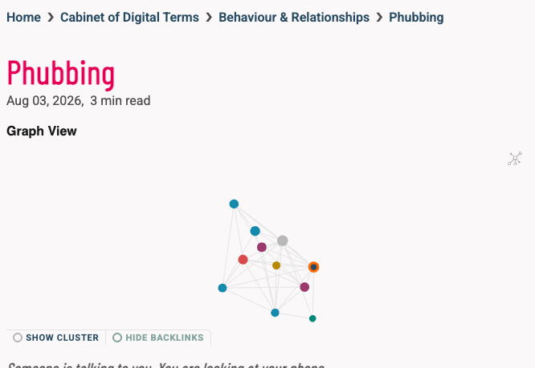
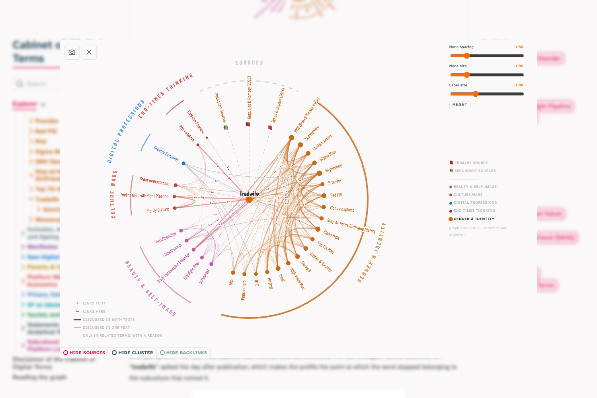
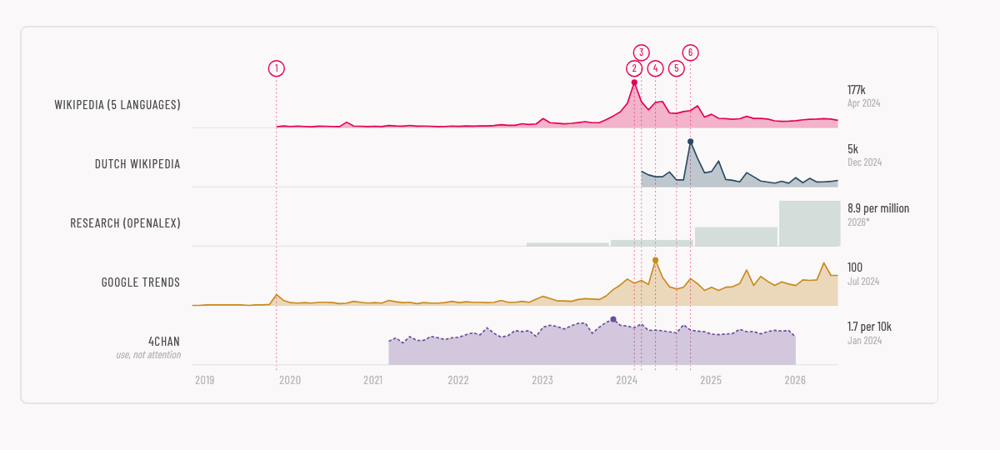
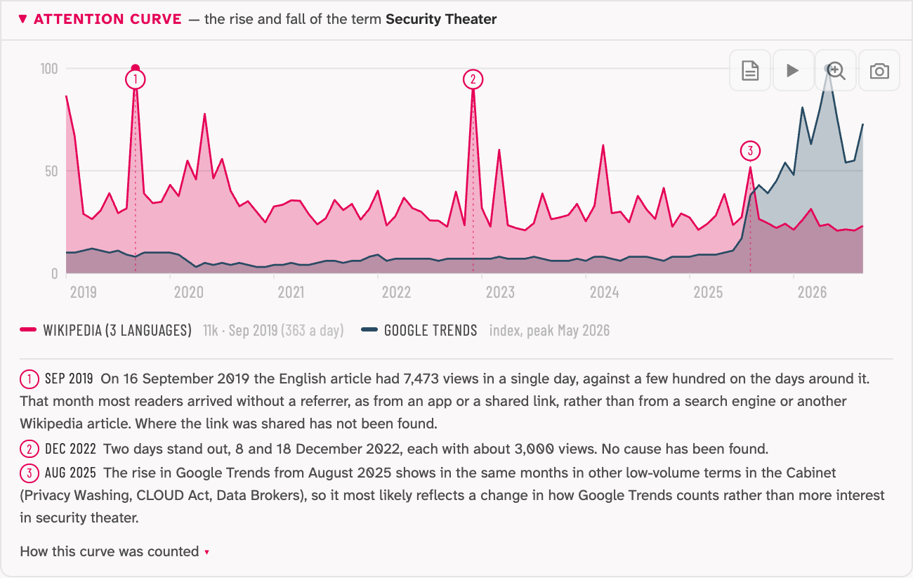
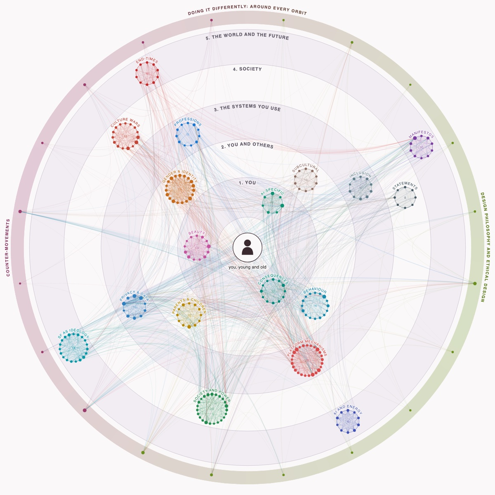

- 2017–2018
Word clouds by hand
Handwritten word clouds of terms: Rabbit Holes, and Self Esteem with Nomophobia, Quantified Self, Snapchat Dysmorphia, Hikikomori and Tinderella Syndrome around it.


- 2023
Objects of Interest
The first visual concept: the clusters as storage jars, fourteen in two rows. A cabinet keeps what would otherwise be lost.

- 27 Apr 2026
Notes in Obsidian
The first terms are written as notes in Obsidian, under a Dutch name: Kabinet van Digitale Termen. Obsidian is a notes app that works with Markdown files: plain text files on your own computer, linked to each other.
- 29 Apr 2026
Online with Quartz
The notes go into a GitHub repository and appear as a website. Quartz is the tool that turns the Markdown files into web pages.
First versionWritten and placed
Published 26 May 2026 · now 223 entries- The term proposed by the curator
- Opening line and definition a situation you recognise, and one sentence that says what it is
- Five parts Literal meaning, Origin, The Appeal, The Friction, Why This Matters
- A place in a cluster and links to neighbouring terms
- A graph the network of links, drawn as in Obsidian: a cloud of dots that find their own place

- Sources listed under the entry; links and DOIs checked, but not all sources read
Second versionMapped
From 5–6 July 2026 · now 28 entries- Sources in the graph with switches to show or hide the sources, the cluster and the backlinks
- Semantic landscape the graph told as a story, in a bar under the graph
- Sources pages in some entries: primary and secondary
- Narrative Typography in four entries, the term drawn as an image by a designer, as in Tradwife
- 31 Jul 2026
The method in writing
The essay Cartographic Prompting: Curatorial Practice Alongside Karpathy’s LLM Wiki ↗ is published on digitale-alertheid.nl.
- 10 Sep 2026
The graph turns radial
For every entry, in every version: the semantic field. The term in the centre, its neighbours on a ring, grouped by cluster, instead of the cloud of dots from Obsidian. Example: Tradwife ↗, with the cluster switched on.

- 15 Sep 2026
The attention curve
When did a word draw attention? A panel under the landscape, first on Tradwife ↗, with each peak traced to its cause.

- 7 Oct 2026
Gender & Identity rewritten
Every term in Gender & Identity ↗ rewritten on the research literature, with sources and a semantic landscape.
Third versionArgued and sourced
From 10–13 October 2026, starting with Privacy, Data and Control · now 10 entries- The question behind the play the opening line ends in a question; The Friction answers it
- You on stage the opening line makes you an imagined actor in the situation
- Every part its own question where you feel it, what the word says, what drives it, where it chafes, what you take with you
- Relations argued neighbouring terms in the text, and a reason for every related term
- Sources read first primary research and secondary background, each on its own page
- Marks in the text * opens a source, ▾ explains a name, ↘ leads to an original
- Attention curve when the word drew attention, and why. Example: Security Theater ↗

- The orbit map every revision checks where the term reaches you and where it is decided. Open the orbits ↗

- Cases from the game cards and entries feed each other
- Breaking the fourth wall Why This Matters turns to you: what it does, what you can do, and what you take with you